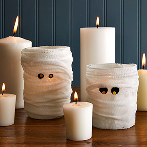

Mummy Votives
Set the scene for Halloween dinner with these mason jars turned mummies, that can hold treats, candles, beverages...
To make: Coat a piece of gauze with Mod Podge, then wrap it around a wide-mouthed Mason jar. Repeat until the entire jar is covered. Cut eyes from black paper and pupils from yellow paper; attach to each other with a dab of hot-glue. Attach eyes to mummy, tucking them beneath the gauze as desired with hot glue. Allow to dry completely. You have successfully mummified your jars... talk about conservation!
